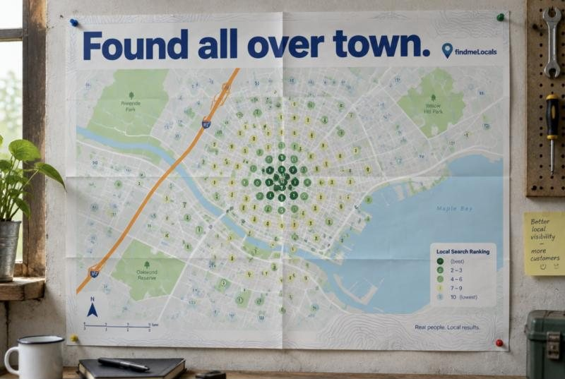
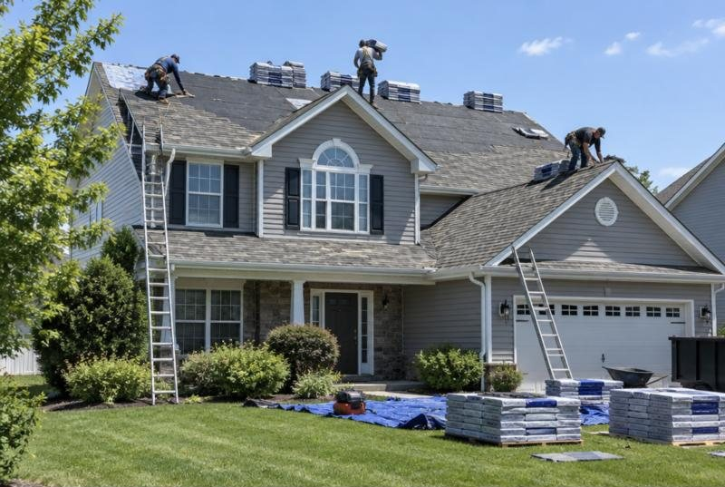
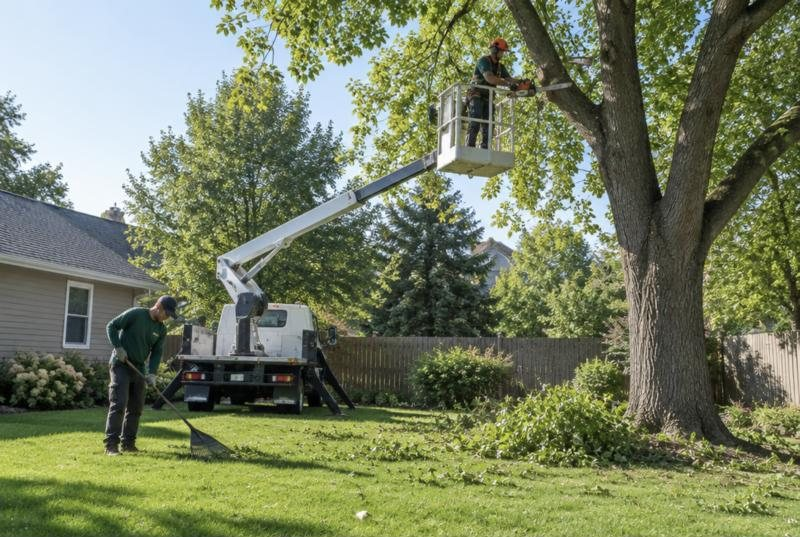
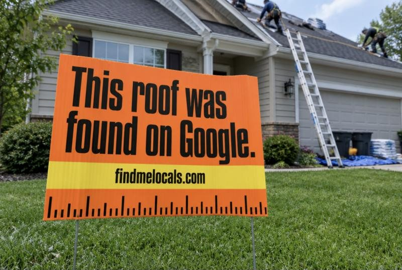

Google barely knows you're there.
No profile, an unverified one, or nothing behind it. People who need you call someone else.
We put you on the map, built around your money job.
We make you the name people find on Google for your money job (the install, the replacement, the big project), anywhere in your city. Set up in 48 hours. Your part takes about 15 minutes.We make you the name people find on Google for your money job, anywhere in your city. Set up in 48 hours. Your part takes about 15 minutes.
Found all over town.
Most owners we talk to are in one of these three spots. Wherever you start, the fix starts with your money job. And we do the work, so you never have to become an SEO expert.
No profile, an unverified one, or nothing behind it. People who need you call someone else.
We put you on the map, built around your money job.
A short drive from your shop, you disappear behind businesses with more reviews.
We spread your reach across your whole city.
You come up for your trade, so the phone rings for small stuff. Your best job goes to someone else.
We aim Google at your money job.
Here's how we fix all three
Wherever your customers are, that's where we work to put your name: downtown, the suburbs and every neighborhood in between. Every month you get a map of your money-job search across the city, so you can see it spreading.

Eight services, one team. Tap any one to see what we do, a full example and tips you can use today.
Your profile rebuilt around the job that pays you best: services, description, photos and posts.
Show up for your money job across the whole city, not just near the shop.
Fresh posts of your real work every week.
Be the name AI tools mention when locals ask.
More five-star reviews about your money job, and a reply to every one.
A fast site with a page built to win your money job. We run it for you.
Every missed call gets a text within a minute, so they don't call the next shop.
Take bookings and custom orders day or night. You confirm the details.
Not sure what you need? The free audit tells you.
Every business that serves a city has a money job. Here's what that looks like for the people we work with.


Examples. Your money job is the one that pays you best.
We follow your professional order's rules on advertising and testimonials. AI assistants only take messages and book appointments; they never give advice.

When someone across town searches for the job you just finished, your name should be the one that comes up. Review requests go out after every money job, and every reply names the work and the area.
Get my free auditBuilt around your money job.
$1,000per month
Once your first money job is winning, we can add a second one. No contract. Cancel anytime. Your price stays locked as you grow. Smaller local shops may qualify for our scholarship program, and we'll tell you on your audit call if yours does. Need a new website? We build and manage it, and we'll quote it on your audit call.
Your part: give us access to your Google profile and text us job photos. We run the rest.
Once Google sends you more calls than you can answer, this add-on makes sure none slip away. Two tools, one add-on:
Missed-call text-backEvery missed caller gets a text within a minute. AI assistants and online bookingBookings and custom orders, day or night.Priced separately. We'll show you how many calls you're missing before suggesting it.
Put in your own numbers. If one or two more of your best jobs a month covers the plan, the math is on your side.
The plan pays for itself with 1 extra job a month.
This is a calculator, not a promise. We can't guarantee a number of jobs; it shows whether the math works for your business.
Nobody controls Google. Anyone who guarantees #1 is guessing. We promise the work, and we show it.
Real customers only, asked the way Google allows. Your reputation is worth more than a shortcut.
Stay because it's working. Cancel anytime with a quick email. If your money-job map hasn't moved in 90 days, we tell you why and what we're changing.
If we can't explain it in one sentence, we don't sell it to you.
Straight answers about money jobs, Google, reviews, AI search, pricing and how we work. 46 questions, grouped by topic.
Find Me Locals helps local businesses win more of the jobs that pay them best from Google. We pick your money job, then build your Google Business Profile, reviews, listings and website around it, so people searching for that job anywhere in your city find you and call. You see every bit of the work in a short weekly email.
Your money job is the service that pays you best and that you'd happily do all week: an AC replacement instead of a filter change, a full roof instead of a patch, a custom cake instead of a cupcake. We start with that one, because one more of those a month is often worth more than ten small calls.
Yes, one at a time. We start with your money job so the work is focused and you can see it moving on your monthly map. Once it's winning, we can add a second service. Your profile still lists everything you do the whole time.
No. Your profile still shows all your services, and better reviews, photos, listings and a stronger profile help your whole business. We simply lead with the job that pays you best, so more of the calls you get are the ones you want.
We work with local businesses that serve customers in a city or service area: trades like plumbers, HVAC companies, roofers, electricians, tree services, landscapers and cleaners, and professional firms like notaries, accountants, bookkeepers and small law and advisory practices. If customers search Google for what you do plus “near me” or your city name, we can help. We don't build online stores with large product catalogs.
Yes. Professional firms have money jobs too, like real-estate closings for a notary or a monthly bookkeeping client for an accountant. We follow your professional order's rules on advertising and testimonials, and any AI assistant we set up only takes messages and books appointments. It never gives professional advice.
Yes, because even referred customers usually look you up on Google before they call. If they find few reviews, old photos or the wrong hours, some will pick someone else. We make sure what they find backs up what they heard, and we bring in people who have never heard of you.
It depends on what your money job is worth. If one job brings in a few thousand dollars, one or two more a month can cover the cost, and the calculator on this page lets you check with your own numbers. Your free audit shows how often people in your area search for that job, so you can judge before spending anything.
Yes, it's free with no obligation. Tell us the job you want more of, and we send a short screen recording showing how often people in your city search for it, where you show up for it, who wins those calls today and how their reviews compare with yours, plus the three fixes that matter most.
Local SEO is the work that helps your business show up when people nearby search Google for what you do, especially on Google Maps. It covers your Google Business Profile, your reviews, your listings on other sites and your website. Done well, more of the right people find you and call.
Start with a verified Google Business Profile that's filled out properly: the right categories, services, service areas, hours, photos and description. After that, steady new reviews, regular posts, consistent listings across the web and a website that backs it all up help Google trust you and show you more often. We handle all of it.
Usually because Google sees them as more relevant, closer to the person searching, or more trusted. Common reasons are more and newer reviews, better categories, a more complete profile and more consistent listings. Your free audit compares you side by side with your top three competitors so you can see exactly where the gap is.
Google weighs distance heavily, so many businesses rank well close to their address and fade out a few miles away. We map your position across your whole service area, then build relevance and trust with reviews, keywords, posts and service-area pages so you show up further out. Your monthly city map shows the spread.
Yes. Google lets service-area businesses hide their address and list the areas they serve instead. We set that up correctly so you can show up across your service area without showing your home address. You still need a real address for Google's verification.
Yes. We add those towns as service areas, build pages on your website for your main services there, and work them into your posts and review replies. Showing up in a town far from your address is harder than showing up nearby, so we'll be straight with you about what's realistic.
It's your free business listing on Google Search and Maps: the panel with your name, reviews, photos, hours and call button. For a local business it's often the first thing customers see, and many call straight from it. If you don't have one, or it isn't verified, that's the first thing we fix.
Not always, but we recommend letting us build and manage it. Your website holds your money-job page, your service-area pages and the code Google reads, and it's where add-ons like a chat assistant or online booking plug in. When we run it, we make changes the same week without waiting on another developer. If you'd rather keep your current site, we'll work with it as long as we can get access.
Yes. We build fast, simple websites for trades and professional firms and keep them running: your money-job page, service-area pages, contact and booking forms, updates, fixes and hosting. We don't build online stores with large product catalogs.
Yes. We help you recover ownership or file a reinstatement request with Google, and fix whatever caused the problem. Google makes the final decision on suspensions, so we can't promise the outcome, but we know what Google asks for and how to present it.
We send every customer a short, friendly review request by text or email after the job, with a direct link to your Google review page. We can also invite past customers back. Plenty of happy customers will leave a review when someone asks at the right moment and makes it easy.
Every review comes from a real customer. We never buy, fake or write reviews, and we don't offer customers rewards for reviewing you, because Google forbids it and can remove reviews or penalize your profile. We simply make it easy for happy customers to say so.
We can't delete reviews; only Google can. We flag reviews that break Google's rules, such as spam, fake reviews or reviews from people who were never customers, and Google decides whether to remove them. For honest negative reviews, we help you post a calm, professional reply, which future customers notice.
Yes. We reply to every review in your voice, thanking happy customers and responding calmly to unhappy ones. Where it fits naturally, replies mention the service and the area, which helps Google understand what you do and where. You can approve replies to negative reviews before they go out.
Often, yes, in your customers' own words. We send the review request right after each money job, so that's the job on their mind, and many mention it and their area on their own. We don't tell customers what to write: Google's rules say businesses shouldn't ask for specific content in a review. We put your keywords in the places you control instead: your replies, your profile, your posts and your website.
AI search is when people ask tools like ChatGPT, Google's AI Overviews or Perplexity to recommend a business, such as “who's a good roofer in Tampa?” These tools draw on your Google profile, reviews, website and other listings. If that information is thin or inconsistent, they're less likely to mention you.
Make sure the facts about your business are complete, consistent and easy to read everywhere AI tools look: your Google profile, reviews, listings and website, including clear FAQ answers and structured data. We do that work and check every month what the main AI tools say about your trade in your area.
No. Nobody controls what ChatGPT or Google's AI says, and anyone who guarantees it is guessing. We make sure these tools have accurate, strong information about your business, and we show you each month what they say about your trade in your city.
Profile fixes and new reviews usually start showing within the first month. Spreading your reach across a whole city usually takes a few months, depending on your trade, your city and your competition. You'll see progress on your monthly city map and in your weekly email.
No, and be careful with anyone who does. Google decides rankings, and they change by search and by where the person searching is standing. We promise the work, show you every bit of it, and track your position across your city every month.
Every week you get a short email listing exactly what we did: posts, photos, review requests, replies and fixes. Every month you get a map of where you show up across your city, how your reviews compare with competitors, and what AI tools say about you. Google's own stats also show calls and direction requests from your profile.
We tell you early and plainly. Your monthly city map shows whether your reach is growing, and if something isn't moving, we explain why and what we're changing. There's no contract, so you're never locked into a service that isn't working for you.
Our Get Found plan is $1,000 a month, built around your money job. It covers your Google profile, a website page for that job, posts, review requests and replies, listings, AI search checks and reporting. Smaller local businesses may qualify for our scholarship program, and we'll tell you on your audit call if yours does.
No. You pay month to month and can cancel anytime with a quick email. Your price stays locked for as long as you stay with us. If you cancel and come back later, it's the standard rate.
You pay by card through a secure checkout page that we send by text or email. You type your card details in yourself; we never ask for a card number over the phone. You get a receipt from Find Me Locals by email right away, and there's no contract.
No. Our core plan is about showing up in Google's free map and search results, not paid ads, so there's no ad spend. If you run Google Ads or Local Services Ads, that budget is paid directly to Google and is separate from our fee.
No. They're optional and priced separately. Most businesses start with getting found. Once more customers are calling, we show you how many calls or messages you're missing and whether text-back, online booking or an AI assistant would pay for itself.
Very little. About 15 minutes up front: you give us access to your Google profile, approve the updates, and send some job photos and a customer list if you have one. After that, you read a short weekly email and send new job photos when you can.
No. We set everything up and run it for you. You never have to log into anything; the weekly email tells you what we did.
You do. Your Google Business Profile stays in your name, and we're added as a manager so we can do the work. If you ever leave, you remove our access and keep everything: your profile, reviews, photos and history.
No. Find Me Locals is an independent local marketing company, not affiliated with Google. Google never calls to sell you anything, so be careful with anyone who says they're calling from Google. We work on your Google profile with your permission, as a manager you can remove at any time.
We limit how many companies in the same trade we take on in each area, and we'll tell you honestly who we work with near you. Each client's data, reports and customer lists are kept completely separate.
No. Our work goes where it brings calls: your Google profile, your reviews, your listings and your website. Social posts rarely change who shows up on Google Maps, so we don't fill your accounts with generic content.
We work with local businesses across the United States and Canada, and all of the work is done remotely. For each client we focus on the city and service area where your customers actually are.
Yes, as an add-on. With missed-call text-back, anyone who calls while you're on a job gets a text within a minute, so they don't move on to the next business. In the US, business texting needs carrier registration, which can take a few weeks, so we start that paperwork on day one.
Yes. We can add online booking and order forms, plus AI assistants that take bookings and custom orders day or night, such as a custom-cake order assistant for a bakery. Your team gets every request and confirms the details before anything is final.
Yes. Our AI assistants and receptionist always say they're automated. They take details, answer common questions and pass everything to you, but they never confirm prices or promises you haven't approved.
No questions match that. Try a shorter word, or ask us directly.
Tell us the job you want more of. We'll send a short screen recording showing who's winning it in your city today, and the three fixes that would put you in front. Free, no strings.
Plain-English tips for trades and local pros: your Google profile, reviews, Google Maps and AI search. Use them yourself, whether you hire us or not.
No tips in this topic yet. New ones are on the way.
Every tip here is part of what we do for clients each week.
The simple system that gets more customers to leave a review, and the three mistakes that can get your reviews removed.
Most happy customers never leave a review. Not because they didn't like the work, but because nobody asked, or asking made it feel like homework. Fix those two things and reviews start coming in on their own.
The best time to ask is right when the job is done and the customer is happy: the new water heater is running, the roof is clean, the documents are signed. Keep it short: “If you were happy with today, a quick Google review really helps a small business like ours.”
Don't make customers search for you. In your Google Business Profile, use the “Ask for reviews” button to get a short link that opens your review box directly. Text it to the customer before you leave the driveway, while the job is fresh.
Only asking customers you think loved the job is called review gating, and it goes against Google's rules. Ask everyone. A few honest four-star reviews make your five-stars more believable anyway.
No discounts, gift cards or prize draws in exchange for a review. Google can remove those reviews and penalize your profile. The same goes for reviews written by staff, friends or family.
Future customers read your replies to see what you're like to deal with. Thank people by name, and mention the job and the area where it fits naturally: “Glad the water heater install in Brandon went smoothly.” For a bad review, stay calm, own what you can, and offer to make it right offline.
One setting tells Google what kind of business you are. Here's how to choose it, and where your money job goes instead.
Your Google Business Profile has one primary category and up to nine secondary ones. The primary category is one of the strongest signals you control, and plenty of businesses leave it on something generic like “Contractor” or pick whatever came up first when they set it up.
Google's rule is simple: your primary category describes your business as a whole, not one service it offers. If you're a plumber who wants more water heater installs, your primary category is still “Plumber”. Switching it to “Water heater installation” can cost you the plumbing searches you already show up for, and it tells Google you're a different kind of business.
Search for your money job on Google Maps from a spot in your city, for example “water heater installation near me”. Open the top three businesses and look at the category shown under their name. It confirms which main category Google pairs with that kind of work, and their services and posts show you how they spotlight it.
Add secondary categories only where they describe your business too, for example “Water heater supplier” if you really sell them. Don't add categories for work you don't do; it can attract the wrong calls and confuse Google about what you are.
This is where the money job wins. List water heater installation as its own service, separate from water heater repair: the searches, the customers and the ticket sizes are different. Build a page on your website just for it in your city, like yoursite.com/water-heater-installation-tampa. Then post photos of real installs you've done, write posts about that work, and ask those customers for reviews. Plumber stays the umbrella, and the install becomes the thing you're known for.
Don't add keywords to your business name, like “Smith Plumbing | Best Water Heaters Tampa”. Your name on Google has to match your real business name, and keyword-stuffed names can get a profile suspended.
If your phone rings for leaks and patches but rarely for full replacements, your Google presence is probably telling the wrong story.
Lots of roofers have the same complaint: plenty of calls, wrong jobs. Small repairs keep the crew busy, but full replacements are what pay the bills. The good news is that Google mostly shows people what you tell it you do.
Check your Google Business Profile. If the services list starts with “Roof repair”, the description says “we fix leaks fast” and the photos are close-ups of shingles, Google and customers both read you as a repair company.
Customers comparing roofers read reviews about the job they need. A review that says “new roof in two days, crew cleaned up everything” sells your next replacement better than any ad. Ask every replacement customer, the same day.
Your website should have a page just for roof replacement in your city: what's included, materials you install, real photos, reviews and a clear way to get a quote. A single “Services” page listing everything rarely shows up for anything in particular.
Search “roof replacement near me” on your phone in a few neighbourhoods you'd like to work in. You might be in the top three near your shop and invisible ten minutes away. That's the gap to close.
Most local SEO tries to rank you for everything. We pick the one job that makes you the most money, then build your Google Business Profile, reviews and website around winning it on Google Maps across your whole city.
Set up in 48 hours · About 15 minutes of your time · No contract
| Typical local SEO agency | Find Me Locals |
|---|---|
| Tries to rank you for everything, so you get small jobs and tire-kickers. | Starts with your money job: the one that pays you best. Everything is built to win that search. |
| Checks rankings from your office address. | Checks your money-job search across your whole city on a map, every month. |
| A dashboard login nobody opens. | A short weekly email of exactly what we did, in plain English. |
| 6 or 12-month contracts. | No contract. Stay because it's working. |
| Buys or gates reviews, risking your profile. | Real customers only, asked the way Google allows. |
We don't publish 50 pages stuffed with keywords. We look for the few searches that bring in your best jobs and that you can realistically win.
What you sell, which jobs pay best and which ones you want more of. That's your shortlist.
Google's own suggestions, related searches and the questions people ask, so we know the words customers use.
We search from your city: who's in the map's top three, who ranks below it, and whether anyone has a page just for that job.
Keyword tools and your own Google data. Very specific searches are often under-counted, so a good one isn't dropped just because a tool shows zero.
A real page for the job, your profile, posts and review replies, all pointing at the searches that pass the test.
Straight talk: a great page helps, but it won't put you in the map's top three on its own. Google Maps also weighs how close you are and how trusted you look, which is why the page comes with your profile, reviews and posts.
Your free audit puts your money-job searches side by side, so you can see where the opening is.
Example A Laval plumber who also does French drains. Search numbers are made up to show the format; yours come from a real keyword tool set to your city, in English and French. Job values are typical Quebec prices.
| Search (in Laval) | Searches a month | One job is worth | Who wins it today | Our take |
|---|---|---|---|---|
| plumber, plumber near me | About 500 | $150 to $400 | Three established shops with 150+ reviews each, then Yelp and Pages Jaunes | Long game |
| water heater replacement | About 90 | $1,200 to $2,500 | Two plumbers and a hardware store. One plumber has a page for it. | Good target |
| french drain replacement | About 40 | $18,000 to $35,000 | Mostly quote-directory sites. Almost no contractor has a real page for it. | Best bet |
Why the small one wins: 40 searches a month sounds tiny, but one French drain job is worth as much as 40 or more service calls. Two of those a year bring in more than a full year of the plan costs, and the competition is directory sites, not real contractors.
We aim you at the search that pays. Not “hvac company near me”, but “ac replacement near me”. Then we rebuild your Google profile around it and spread your reach street by street.
Customers shopping for a big job read reviews about that job. We make sure they find plenty, plus photos and short videos of the work itself.
Found first for the job you want and backed by reviews about it, you get picked. Every month you see a fresh map of where you show up for that search.
A free audit: which job pays you best, how often people in your city search for it, and who gets those calls today.
Your profile and listings are rebuilt around that job and review requests are switched on. You approve. Your website page follows.
A short email listing exactly what we did, in plain English.
Watch where you show up for your money job spread across the city, month by month.
Done for you means done for you. Here's the whole list of what we need from you.
A few minutes a week
Everything else
Most agencies send a login nobody opens. We send a short email you can read in the truck.
Something else on your mind? See all questions or ask us on your free audit.
Local SEO helps you show up when people nearby search Google for what you do, especially on Google Maps. Google looks at how relevant your profile is to the search, how close you are to the searcher and how trusted you look, mostly through reviews, your website and your listings. We work on all three, focused on your money job.
Profile fixes and new reviews usually show within the first month. Spreading your reach for your money job across a whole city usually takes a few months, depending on your trade, your city and your competition. Nobody can promise a ranking or a date, so we show you a fresh city map every month instead.
Your money job is the service that makes you the most profit per job: an AC replacement instead of a filter change, a full roof instead of a patch, a real-estate closing instead of a single signature. We pick it with you on the free audit and build everything around winning more of it.
Thirty minutes for the free audit call, manager access to your Google Business Profile, and access to your website if you keep your current one. After that, approve the changes in the first 48 hours and text us photos from your jobs. We handle everything else.
We rebuild your Google profile around your money job, fix your listings, switch on review requests and plan your website page. You approve everything before it goes live; Google can take a few days to publish some profile edits. From then on, you get a short email every week listing exactly what we did.
Every week you get an email of the work we did. Every month you get a city map showing where you show up for your money-job search, your reviews next to your top three competitors, and what AI tools say about your trade in your city. The real test is your phone: more calls for the job you want.
No. The Get Found plan is month to month, and you can cancel anytime with a quick email. You keep your Google profile, your reviews and your listings, because they were always yours.
Free audit: a short screen recording of who's winning your search today and the three fixes that would put you in front.
Your Google Business Profile is the first thing most local customers see, and many call straight from it. We set it up so Google knows exactly which job to send you, and customers can tell you're the one for it.
Starts with a free audit · No contract · You own everything
A generic primary category, a one-line description, a few old photos and a services list that treats a water heater install the same as a leaky faucet. Google can only show you for what your profile tells it, so a vague profile gets vague calls.
That's what we fix, built around your money job.
A primary category that describes your whole business, like Plumber, plus secondary categories only for work you really do. Your money job goes in your services, where it can stand out without changing what you are.
Every service you offer listed, with your money job first and described in plain words.
What you do, where you do it and why people pick you, without the keyword stuffing Google penalizes.
Set to where your trucks actually go, with holiday hours updated before every holiday.
Your job-site photos added and organized, led by your money job.
Google and the public can suggest edits to your profile. We check for changes and fix the wrong ones.
We compare your profile with the top three businesses for your money job.
Categories, services, description, areas and photos rewritten. You approve before anything goes live.
New photos and posts, and fixes whenever something changes.
Your city map for the money-job search, plus what changed and why.
“ABC Plumbing is a family-owned plumbing company providing quality service. Call today!”
“Water heater installation and replacement across Tampa, Brandon and Riverview. Tank and tankless, same-week installs, licensed and insured. We also handle drain cleaning, leaks and repairs. Family-owned since 2009.”
Example for illustration. The after version names the money job first, the areas served and the reasons to choose them.
Something else on your mind? See all questions or ask us on your free audit.
It's your free business listing on Google Search and Maps: the panel with your name, reviews, photos, hours and call button. For a local business it's often the first thing customers see.
No. Service businesses that go to their customers can hide their address and list the areas they serve instead. You still need a real address for Google's verification.
No. Your profile name has to match your real business name. Keyword-stuffed names break Google's rules and can get a profile suspended, so we put keywords where they belong: categories, services, description and posts.
Most edits appear within a few days, and some go through a review by Google first. Moving up the map for your money job takes longer, usually a few months.
You do. We're added as a manager so we can do the work, and you can remove us at any time and keep everything.
Yes. We help you file a reinstatement request with Google and fix what caused it. Google makes the final decision, so we can't promise the outcome.
Free money-job audit: a short screen recording of who's winning your search today and the three fixes that would put you in front.
Most businesses rank well a few blocks from their address and fade out a few miles away. We track your money-job search across your entire service area, then work every lever until you show up further out.
Starts with a free audit · No contract · You own everything
So the competitor closest to your customer often gets the call, even when you're the better choice. You can't move your shop. You can make Google more confident that you're the right business for that job, in more of your city.
That's what we fix, built around your money job.
Every month we check where you show up for your money-job search at dozens of points across your service area.
The exact words people in your city use when they search for your money job, with real search numbers.
A genuinely useful page on your website for your money job in each main area you serve. No copy-paste filler.
Your name, address and phone kept identical on Yelp, Apple Maps, Bing, Facebook and the directories that matter for your trade.
Page titles, headings and the behind-the-scenes code (schema) that tells Google what you do and where.
Who sits above you for your money job, and what they have that you don't yet.
Your money-job search checked across the whole city, so you see where you show up and where you don't.
Listings cleaned up, website pages and code fixed, profile matched to the search.
Reviews, posts and pages that strengthen you in the areas where you're weakest.
A fresh city map so you can watch your reach spread out.
Illustration, not a client result. Each dot is a spot in the city; the number is where the business shows up on Google Maps for the money-job search from that spot. Real timelines vary by trade, city and competition.
Something else on your mind? See all questions or ask us on your free audit.
Local SEO is the work that helps your business show up when people nearby search Google for what you do, especially on Google Maps. It covers your Google profile, reviews, listings and website.
Profile fixes and new reviews usually show within the first month. Spreading your reach across a whole city usually takes a few months, depending on your trade, your city and your competition.
Nobody can promise that, and anyone who does is guessing. Google decides rankings, and they change with where each person is searching. We promise the work and show you the monthly map.
It's a grid of points across your service area. At each point we check where you show up for your money-job search, so you can see where you're in the top three and where you're not.
Yes, within reason. We add them as service areas, build useful pages for them and work them into your posts and replies. Towns far from your address are harder, and we'll be straight about what's realistic.
No. This is about Google's free map and search results. If you also run ads, that budget is separate and paid directly to Google.
Free money-job audit: a short screen recording of who's winning your search today and the three fixes that would put you in front.
Customers shopping for a big job want proof you've done it before. We turn your job-site photos and short clips into weekly Google posts that show exactly that.
Starts with a free audit · No contract · You own everything
Old 40-gallon tank out, new tankless in. Same-day swap in Brandon this morning. Need a water heater replaced in Tampa or Brandon? Give us a call.
Call nowExample post. Real posts lead with your own job photos. When there isn't one that fits, we may use a stock or AI image for a general post, but never pass it off as a job you did.
If your newest photo is two years old, customers wonder whether you're still around. And if none of your photos show your money job, they can't tell you do it well.
That's what we fix, built around your money job.
A short update with a photo or clip every week, written around your money job and the areas you serve.
Your best job-site photos added to your profile and organized.
Clips from your phone turned into short before, during and after videos.
Text or email us photos from the job site. That's your whole part.
Reminders before your busy season, and real offers when you have them.
Every caption names the job and the area, in plain words.
Take a before and an after photo on your money jobs, and send them over.
We pick the best shots and write a short post around the job and the area.
A fresh post on your profile, so it always looks active.
What we posted and how people interacted with your profile.
Something else on your mind? See all questions or ask us on your free audit.
Google doesn't say posts directly lift rankings. We use them because they keep your profile active and show customers recent proof of the job they want, which helps them pick you.
Mostly, yes. Real photos of your real work are what convince customers. You send them from the job; we do everything else.
Sometimes, for general posts like a seasonal tip, when you don't have a photo that fits. Your real job photos always come first, because customers trust them more. We never present a stock or AI image as a job you actually did.
No. Our posts go on your Google profile, where people are searching for a business to call.
Every week, plus extra seasonal posts before your busy months.
Free money-job audit: a short screen recording of who's winning your search today and the three fixes that would put you in front.
More people now ask ChatGPT, Google's AI results or Perplexity things like “who's a good roofer in Tampa?” Those answers draw on the same places we already work on: your Google profile, reviews, website and listings.
Starts with a free audit · No contract · You own everything
Here are a few well-reviewed options:
Example for illustration. No one controls what AI tools say; we make sure they have accurate, strong information about you.
If your hours are wrong on one site, your services are missing on another and your website is vague about what you do, AI tools either skip you or get you wrong.
That's what we fix, built around your money job.
We ask the main AI tools about your money job in your city and show you what they say, with screenshots.
Name, services, areas, hours and phone made consistent everywhere AI tools look.
Plain-language answers and structured data so your site is easy to read and quote.
Recent reviews that mention the work, which AI answers often summarize.
When an AI tool gets something wrong about you, we fix the source it's likely reading.
What changed this month, in one short section of your monthly report.
We ask the main AI tools about your money job in your city and record what they say.
Listings, profile and website corrected wherever the facts are wrong or missing.
New reviews, posts and clear answers on your website.
The same questions asked again, with the answers in your report.
Something else on your mind? See all questions or ask us on your free audit.
It's when people ask tools like ChatGPT, Google's AI results or Perplexity to recommend a business instead of scrolling through search results.
No. Nobody controls what AI tools say. We make sure they have accurate, consistent information about your business, and we show you each month what they say.
The foundations are the same: a strong Google profile, real reviews, consistent listings and a clear website. The difference is that we also check the AI answers directly and fix what they get wrong.
The ones local customers actually use, starting with ChatGPT, Google's AI results and Perplexity.
Free money-job audit: a short screen recording of who's winning your search today and the three fixes that would put you in front.
Plenty of happy customers never leave a review, simply because nobody asked. We ask every customer at the right moment, make it a one-tap job, and answer every review in your voice.
Starts with a free audit · No contract · You own everything
Example messages. Real requests go to every customer, never only the happy ones, and never with a reward attached.
When customers compare three businesses on the map, they read the reviews, and recent, detailed reviews about the exact job carry the most weight. That's usually not about who does better work. It's about who asks.
That's what we fix, built around your money job.
A friendly text or email after every job, with a direct link to your Google review page.
Past customers invited back to leave a review, once and politely.
Every review answered, naming the job and the area where it fits naturally.
A professional reply drafted for you to approve, so future customers see how you handle problems.
Fake reviews, spam and reviews from people who were never customers flagged to Google.
Your count, rating and pace next to your top three competitors, every month.
We set up the request flow and, if you have one, invite your past customers.
Your customer gets a short, friendly request with a one-tap link.
Every new review gets a reply in your voice.
Your reviews next to your top three competitors.
Something else on your mind? See all questions or ask us on your free audit.
We send every customer a short, friendly request after the job, with a direct link to your Google review page, and invite past customers back once. Plenty of people will leave a review when it's easy and someone asks.
Yes. Every review comes from a real customer. We never buy, write or reward reviews, because Google forbids it and can penalize your profile.
Only Google can remove reviews. We flag the ones that break Google's rules, and for honest negative reviews we help you post a calm reply that future customers will notice.
We send one request and, at most, one gentle reminder. That's it.
Often, in their own words. We ask right after each money job, so that's what customers tend to write about. We never tell them what to say, since Google's rules don't allow asking for specific content. Your keywords go in your replies, profile, posts and website.
We draft a calm, professional reply for you to approve, and help you follow up with the customer if you want to. One fair complaint, handled well, can build more trust than another five-star review.
Free money-job audit: a short screen recording of who's winning your search today and the three fixes that would put you in front.
Google checks your website against your profile. When we build and run both, every page supports the search you want to win, and booking or chat tools plug straight in.
Starts with a free audit · No contract · You own everything
Example layout. For trades and professional firms; we don't build online stores with large product catalogs.
Slow on phones, no tap-to-call button, one page listing twenty services equally, and a developer who takes three weeks to change a phone number. The site should be working for your money job, not sitting there.
That's what we fix, built around your money job.
Built for phones first, with your number one tap away on every page.
A full page for your best-paying job in your city: what you do, real photos, reviews and a clear way to get a quote.
Useful pages for the main areas you serve, written for people in those areas.
Titles, headings and structured data that match your Google profile.
Quote and contact forms that land on your phone or in your inbox right away.
Changes done the same week. No developer to chase.
We agree on your money job, your pages and what the site needs to do.
We build a draft with your photos and details. You review and approve.
The site goes live and gets connected to your Google profile, listings and forms.
Updates, fixes and new pages as your business grows.
Something else on your mind? See all questions or ask us on your free audit.
Not always. If your current site is fast and we can get access, we'll work with it. We recommend letting us build and manage it, so your money-job page and add-ons like booking can change the same week.
It depends on how many pages you need. We quote it on your free audit call, once we know your money job and your service areas.
No. We build sites for trades and professional firms, not stores with large product catalogs.
You can ask us anytime and we'll make the change the same week. Most owners would rather not touch it.
Yes. Online booking, quote forms and a chat assistant plug straight into the sites we manage.
Free money-job audit: a short screen recording of who's winning your search today and the three fixes that would put you in front.
When you're on a ladder or under a sink, you can't pick up. Text-back sends the caller a friendly text right away, so they wait for you instead of calling the next business on the list.
Starts with a free audit · No contract · You own everything
Example conversation. Callers with hidden numbers or landlines can't receive texts.
Many callers don't leave a voicemail. They hang up and try the next name on the map. Once your Google work brings in more calls, catching the ones you miss is the cheapest win there is.
That's what we fix, built around your money job.
A short, friendly text from your business within a minute of a missed call.
Written in your voice, with your hours and when you'll call back.
Customers reply by text, and you answer from one inbox on your phone.
Every caller saved with their number and what they need, so nobody gets lost.
How many calls you missed and how many we caught, every month.
Set up with call forwarding on your existing business number in most cases.
In the US, business texting needs carrier registration. We start the paperwork right away; it can take a few weeks.
We set your phone to forward missed calls on one short call.
Missed callers get a text within a minute, and replies come to your phone.
Missed calls, texts sent and conversations started.
Something else on your mind? See all questions or ask us on your free audit.
In most cases, yes, using call forwarding on your existing business number. We confirm it on your setup call.
It reaches mobile phones whose number comes through. Hidden numbers and landlines can't receive texts.
In the US, business texting needs carrier registration, which can take a few weeks. We start the paperwork on day one.
No. If Google bills a missed call as a lead, that charge stands. Text-back gives you a second chance at the job.
It's an add-on, priced separately. We'll show you how many calls you're missing before suggesting it.
Free money-job audit: a short screen recording of who's winning your search today and the three fixes that would put you in front.
A chat assistant on your website and online booking that answer common questions, collect the job details and book the slot, then hand everything to you to confirm.
Starts with a free audit · No contract · You own everything
Example conversation with a fictional bakery. For regulated professions, the assistant only takes messages and books appointments; it never gives advice.
They browse after work. If your site only says “call during business hours”, some of them move on to a business that lets them book right now.
That's what we fix, built around your money job.
Answers common questions about your services, areas and hours, in your words.
Customers pick a time from your real calendar for quotes, consults or appointments.
Guided forms for jobs with details, like a custom cake order or a roof quote with photos.
Answers calls when you can't, takes the job details and texts you a summary.
Every chat, booking and call lands in your customer book.
It always says it's automated, never confirms prices or promises you haven't approved, and hands off to you.
Your services, the questions customers ask, the prices it may mention and the rules it must follow.
Your calendar, phone and website hooked up.
We run real conversations through it and fix the answers together.
We read the conversations and tighten anything that missed.
Something else on your mind? See all questions or ask us on your free audit.
Yes. Our assistants and receptionist always say they're automated.
Only what you approve: exact prices, ranges, or none at all. It never confirms a final price or a promise on its own.
Yes, for messages and appointments only. It never gives professional advice.
It says so, takes the customer's details and passes them to you.
It's an add-on, priced separately, and quoted once we know what you want it to handle.
Free money-job audit: a short screen recording of who's winning your search today and the three fixes that would put you in front.